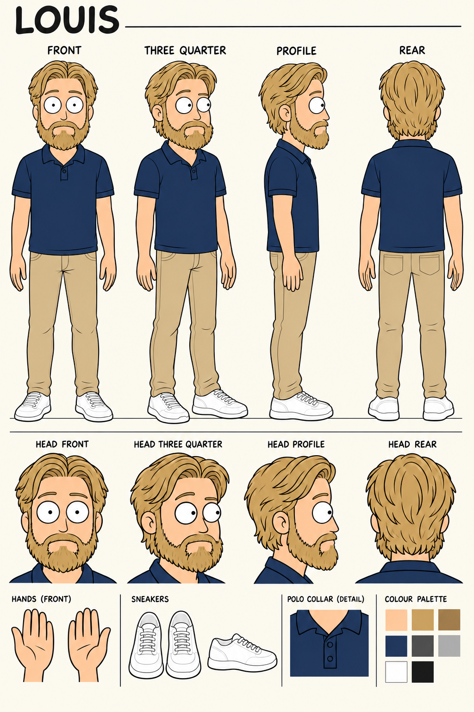
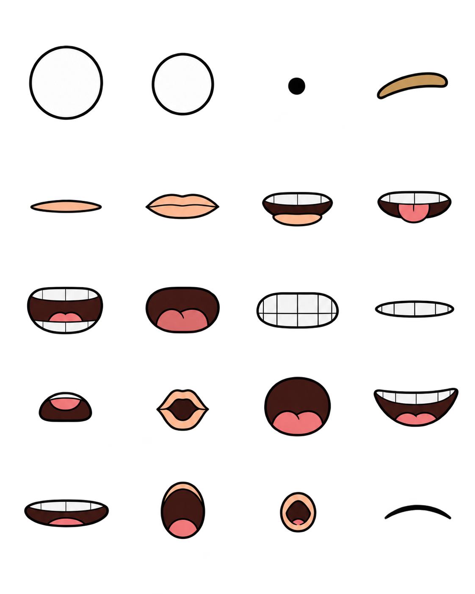
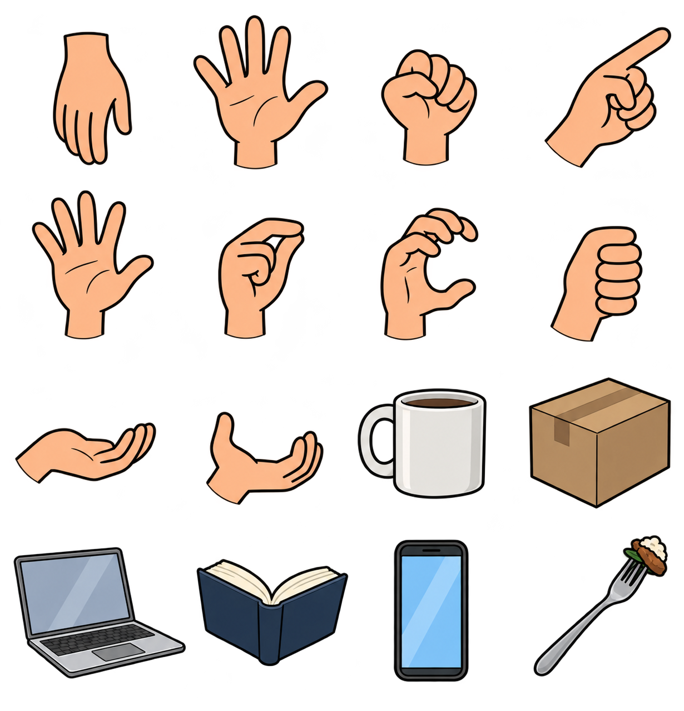

MOTION STUDIO / CHARACTER LIBRARY
Louis
animation workbench
Pack instructions ↗
THREE-QUARTER · SCREEN-RIGHT · 24 FPS
Pause
← frame
frame →
Reset rig
Fixed registration · transparent source artwork · reference views below
Canonical design reference

Generated replacement drawings

